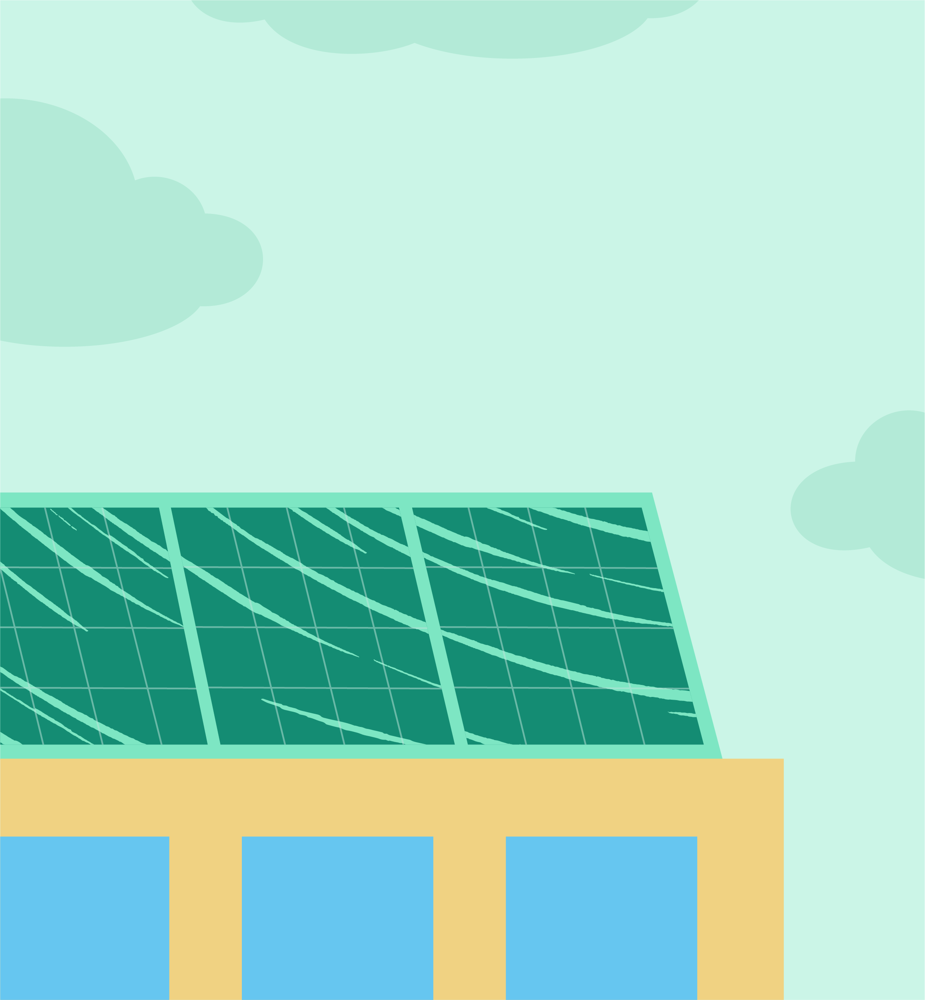
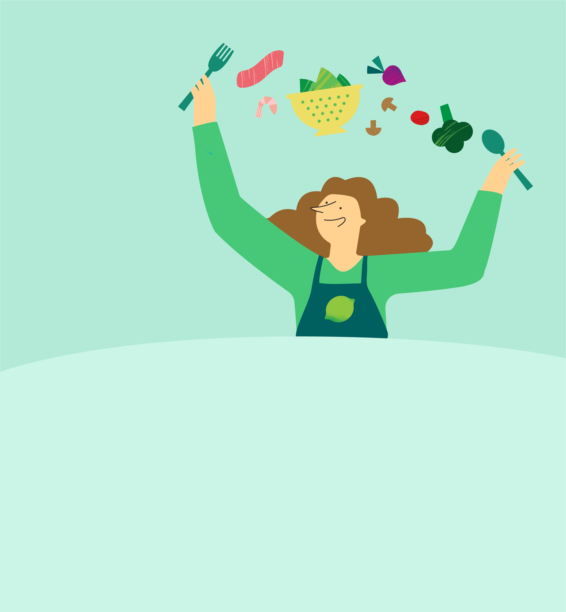
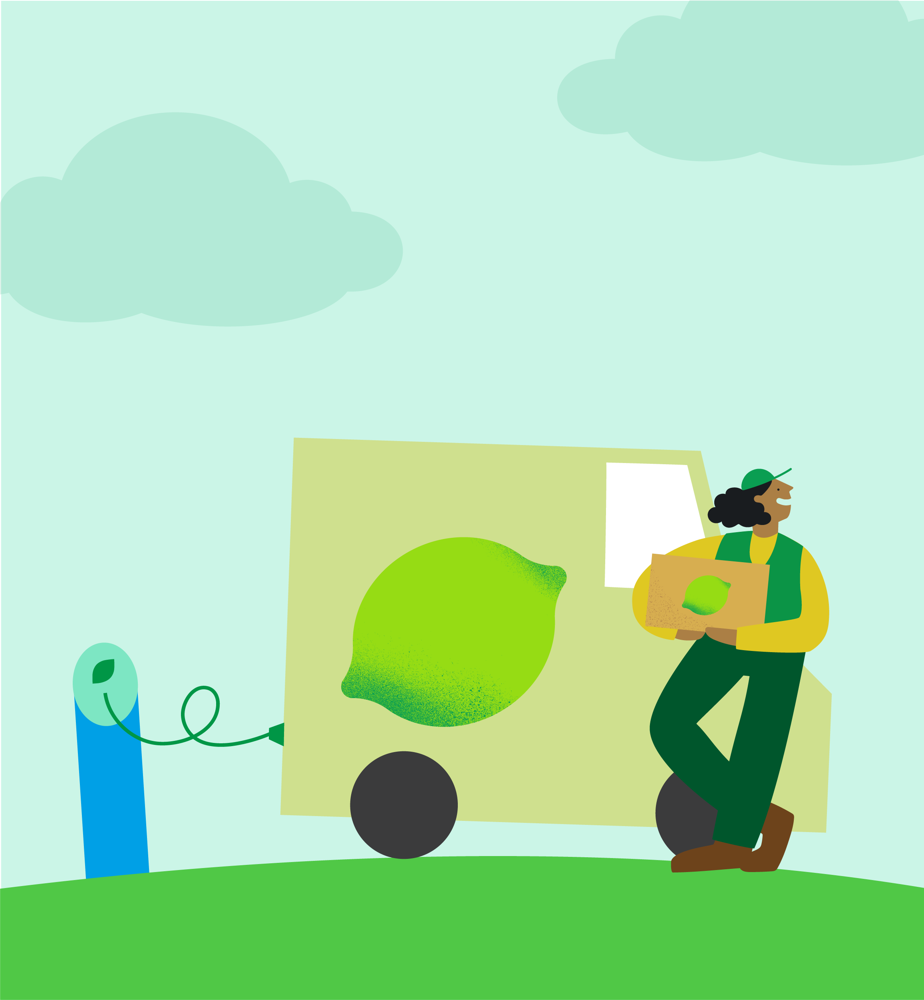
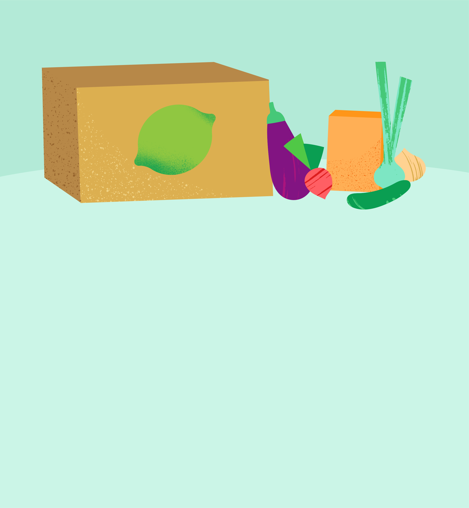
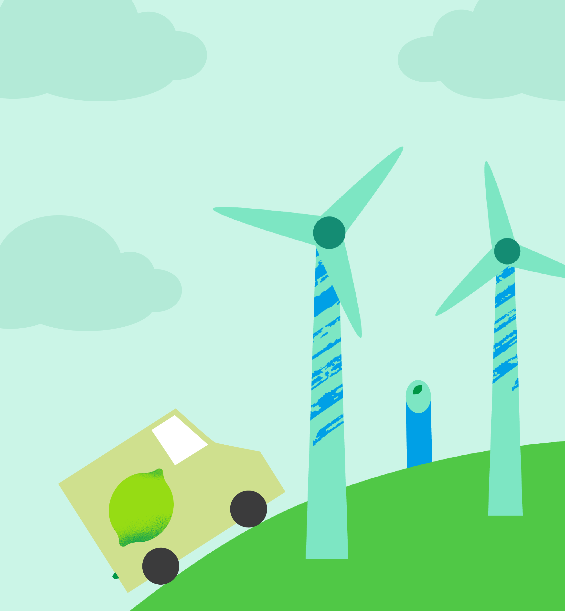
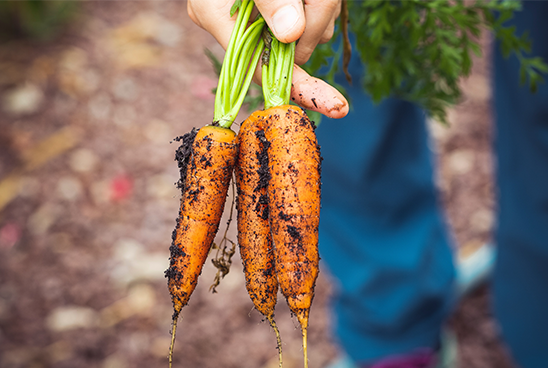
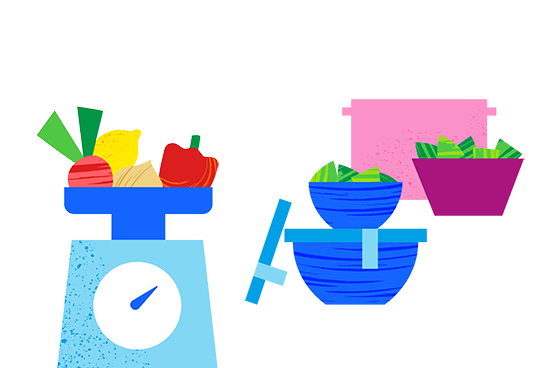
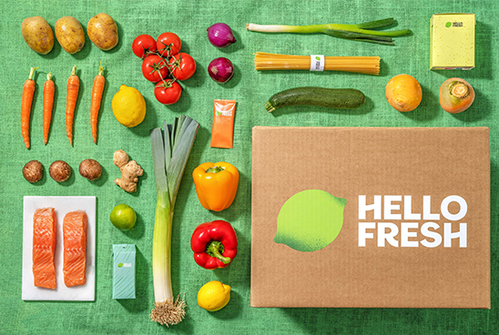
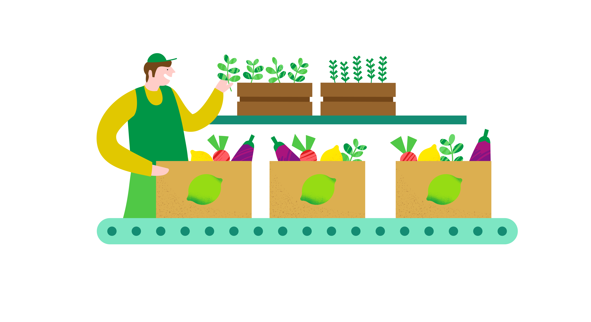

-
Samen Duurzaam
-
Duurzaamheid is onderdeel van alles wat we doen. Klinkt het verminderen van jouw CO₂-voetafdruk ingewikkeld? Laten we het samen doen! Door kleine stapjes te zetten, maken we het verschil.
Verklein je CO₂-voetafdruk
Minder voedsel verspillen en je CO₂-voetafdruk verkleinen? Met HelloFresh koop, kook en eet je gemakkelijk op een duurzame manier. De box wordt CO₂-neutraal ingepakt en thuisbezorgd en de ingrediënten ontvang je in exact de juiste hoeveelheden, zodat je niks verspilt. Lekker duurzaam dus!
Lees MeerWist je dat...
-
Koken met HelloFresh
zorgt voor 21% minder voedselverspilling* dan koken zonder HelloFresh
 -
Elektrisch Bezorgd
dat geldt al voor 60% van de boxen in de Benelux. Op naar 100%!
-
Jouw HelloFresh-maaltijd
zorgt voor 11% minder CO₂-uitstoot** dan de supermarkt
-
Onze E-busjes
worden opgeladen met 100% groene windenergie
-
Jouw HelloFresh-maaltijd
zorgt voor 11% minder CO₂-uitstoot** dan de supermarkt
- 
-
Rechtstreeks van onze leveranciers
Kwaliteit en versheid staan bij het selecteren van de ingrediënten in de box altijd op één. Daarom kiezen we er waar mogelijk voor om direct samen te werken met leveranciers van dichtbij, die zich ook inzetten voor duurzaamheid. Zo zijn de ingrediënten niet te lang onderweg en weten we precies waar ze vandaan komen en hoe ze zijn geproduceerd.
Lees Meer
- 
-
Voorkom voedselverspilling
Vind jij eten dat in de prullenbak belandt ook zonde? Kook met HelloFresh en verspil minder voedsel. Wij kopen de ingrediënten in op basis van jouw bestelling en jij ontvangt ze in exact de juiste hoeveelheden. Zo hebben we minder dan 0,2% voedselverspilling in onze keten én verspil jij thuis gemiddeld 21% minder voedsel dan wanneer je zelf voor het avondeten zorgt.
Lees Meer
- 
-
Slim verpakt
Verduurzamen, verminderen en optimaliseren van onze verpakkingen, daar zijn we elke dag mee bezig. Ons doel? Minder afval en jou verzekeren van de beste verse ingrediënten. Waarom sommige ingrediënten in jouw box verpakt zijn? Zodat we zeker weten dat ze vers bij jou aankomen. Zo belandt er minder in de prullenbak en gaan we voedselverspilling tegen.
Lees Meer
- 
-
Duurzaamheidsrapport 2021
In 2021 hebben we meer huishoudens dan ooit voorzien van verse ingrediënten. Bekijk ons Duurzaamheidsrapport 2021 en ontdek hoe we dit op een zo duurzaam mogelijke manier hebben gedaan.
Lees Meer
Jouw maaltijdbox, van nature duurzaam
Elke week kopen wij de ingrediënten in op basis van jouw bestelling en jij ontvangt ze in precies de juiste hoeveelheden. Zo hebben we nauwelijks voedselverspilling in onze keten én verspil jij thuis minder voedsel dan wanneer je zelf voor het avondeten zorgt. Bovendien heeft HelloFresh een superkorte keten: we vermijden extra stops op onze routes en geven de voorkeur aan ingrediënten van dichtbij, zodat ze niet te lang onderweg zijn en vers blijven. Het resultaat: jouw HelloFresh-maaltijden zorgen voor 11% minder CO2-uitstoot dan dezelfde maaltijden gemaakt met ingrediënten uit de supermarkt. Meer weten over onze levenscyclus?
Bronnen slider:
* Global Food Waste Study, 2020HelloFresh Levenscyclysanalyse, 2022
HelloFresh-maaltijden veroorzaken 11% minder CO₂-uitstoot dan dezelfde maaltijden bereid met ingrediënten uit de supermarkt.
© HelloFresh 2024